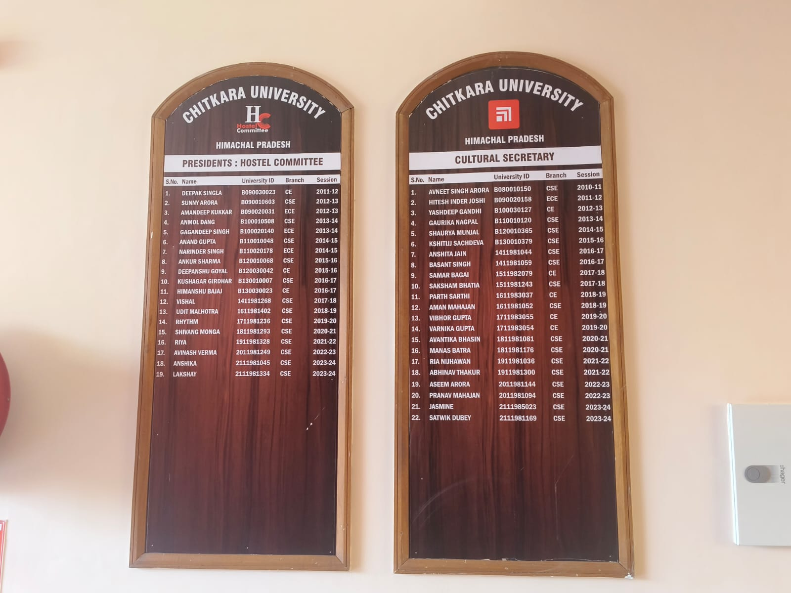
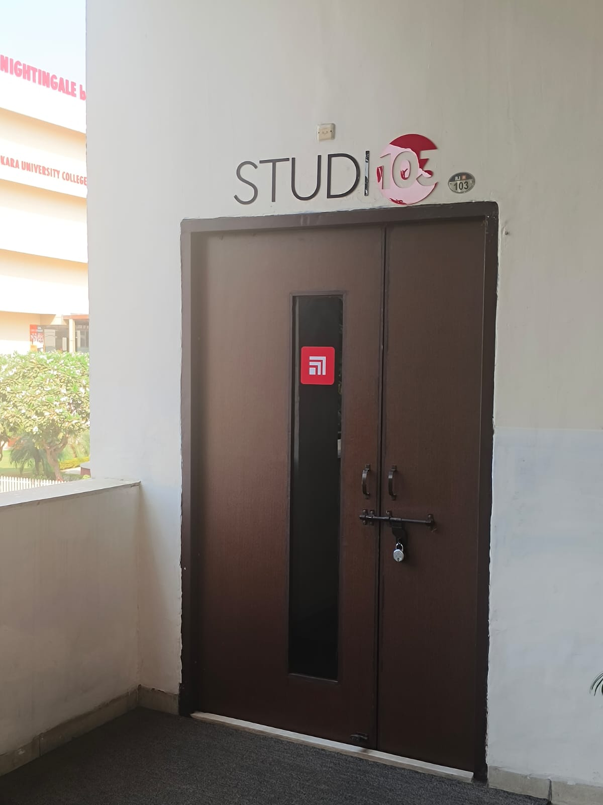
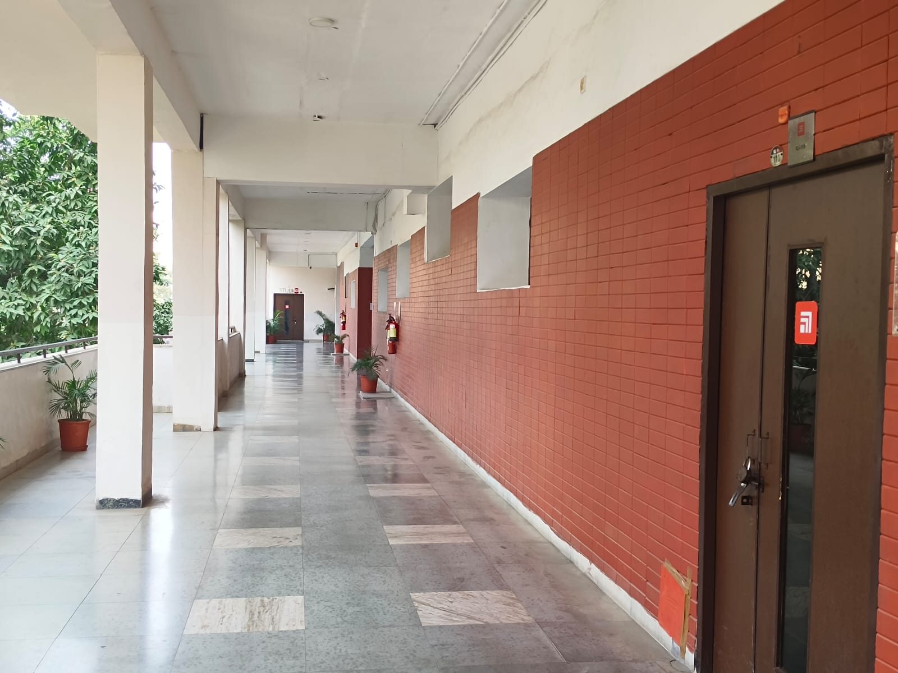
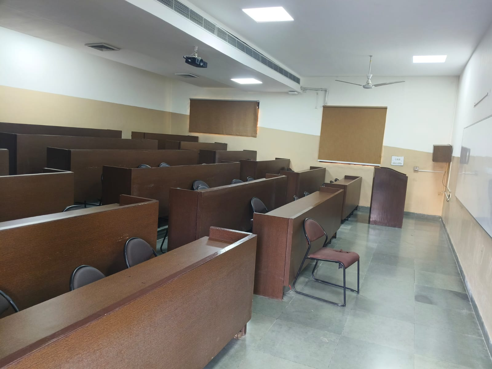
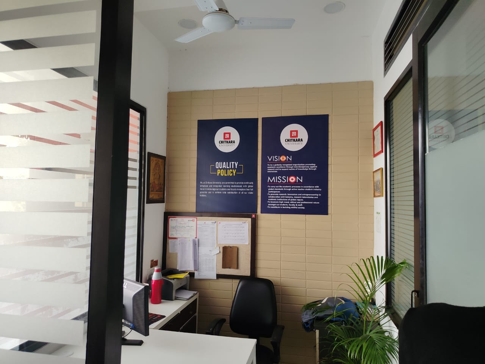

PRESIDENTS : HOSTEL COMMITTEE AND CULTURAL SECRETARY
The board placed in the corridor of the Ramanujan Block at Chitkara University displays the names and roll numbers of the President of the Hostel Committee and the Cultural Secretary. This board serves to acknowledge and identify the student leaders responsible for managing hostel affairs and organizing cultural events. The President of the Hostel Committee handles hostel-related issues, while the Cultural Secretary takes charge of planning and coordinating various cultural activities, enriching the campus experience for students.
STUDIO 103
Studio 103 in the Ramanujan Block at Chitkara University is a creative space designed for students to engage in practical learning and experimentation. It is equipped with modern tools and resources that support various artistic and design-based activities, including digital media, graphic design, and multimedia production. The studio provides an environment for students to work on projects, collaborate with peers, and enhance their skills in the fields of creativity and technology. It serves as an important space for fostering innovation and developing hands-on experience in design and media-related disciplines.


CORRIDOR
The corridors of Chitkara University are not only clean and well-maintained but also serve as a source of inspiration for students. Adorning the walls are quotes from successful individuals, promoting motivation and a positive mindset. These quotes create an uplifting atmosphere, encouraging students to strive for excellence as they navigate through their daily routines. The combination of cleanliness and motivational messages makes the corridors a vital part of the university's learning environment.COMPUTER LABS
The Computer Lab in the Ramanujan Block at Chitkara University is a state-of-the-art facility designed to support students' learning in various fields of technology and computer science. The lab is equipped with high-performance computers, specialized software, and networking tools to facilitate practical training, programming, data analysis, and research activities. It provides a conducive environment for students to enhance their technical skills, work on projects, and conduct experiments, making it an essential resource for academic and professional growth in the field of information technology.


CLASS ROOMS
At Chitkara University, the classrooms are designed to foster an engaging and interactive learning environment. Equipped with modern technology, including projectors, they support various teaching methods. The seating arrangements encourage collaboration among students, promoting group discussions and teamwork. The overall atmosphere is conducive to both theoretical learning and practical application, enhancing the educational experience.FACULTY ROOMS
The Faculty Room in the Ramanujan Block at Chitkara University is a dedicated space for faculty members to collaborate, plan lessons, and engage in academic discussions. It is equipped with necessary amenities to support the teaching and research activities of the faculty. The room provides a comfortable and professional environment where faculty members can prepare lectures, meet with students, and work on academic projects. It serves as a hub for faculty interactions, fostering communication and a collaborative approach to academic excellence.
